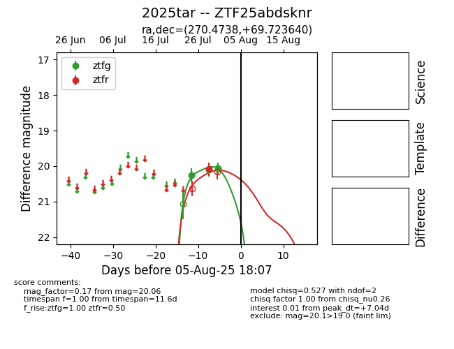

Target 2025tar at 2025-08-05 18:07, see:
FINK: fink-portal.org/2025tar
Lasair: lasair-ztf.lsst.ac.uk/objects/2025tar
ALeRCE: alerce.online/object/2025tar
TNS: wis-tns.org/object/2025tar
YSE: ziggy.ucolick.org/yse/transient_detail/2025tar
alt names
ZTF25abdsknr (ztf,fink)
2025tar (tns,yse)
coordinates:
equatorial (ra, dec) = (270.4738,+69.72364)
galactic (l, b) = (100.0227,+29.59603)
photometry
last ztfg=20.06, ztfr=20.09
3 ztfg, 1 ztfr detections
